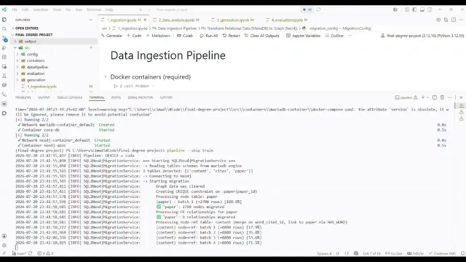

TFG — Synthetic Knowledge Graphs
De bases de datos relacionales a grafos de conocimiento sintéticos: generación de datos semánticos sintéticos con Graph Machine Learning. Nota: 10/10, con matrícula de honor propuesta.
Repositorio del TFG · Docs del TFG · Demo del TFG en YouTube